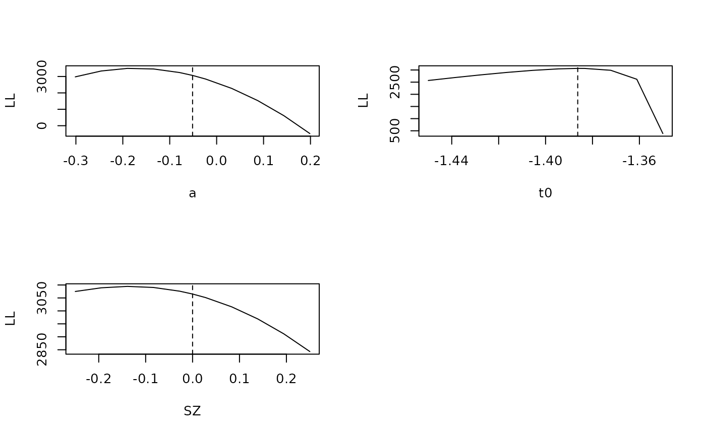

Creates likelihood profile plots from a design and the experimental data by varying one model parameter while holding all others constant.
Usage
profile_plot(
data,
design,
p_vector,
range = 0.5,
layout = NA,
p_min = NULL,
p_max = NULL,
use_par = NULL,
n_point = 100,
n_cores = 1,
round = 3,
true_args = list(),
...
)Arguments
- data
A dataframe. Experimental data used, needed for the design mapping
- design
A design list. Created using
design.- p_vector
Named vector of parameter values (typically created with
sampled_pars(design))- range
Numeric. The max and min will be p_vector + range/2 and p_vector - range/2, unless specified in p_min or p_max.
- layout
A vector indicating which layout to use as in par(mfrow = layout). If NA, will automatically generate an appropriate layout.
- p_min
Named vector. If specified will instead use these values for minimum range of the selected parameters.
- p_max
Named vector. If specified will instead use these values for maximum range of the selected parameters.
- use_par
Character vector. If specified will only plot the profiles for the specified parameters.
- n_point
Integer. Number of evenly spaced points at which to calculate likelihood
- n_cores
Number of likelihood points evenly spaced between the minimum and maximum likelihood range.
- round
Integer. To how many digits will the output be rounded.
- true_args
A list. Optional additional arguments that can be passed to plot.default for the plotting of the true vertical line.
- ...
Optional additional arguments that can be passed to plot.default.
Examples
# \donttest{
# First create a design
design_DDMaE <- design(data = forstmann,model=DDM,
formula =list(v~0+S,a~E, t0~1, s~1, Z~1, sv~1, SZ~1),
constants=c(s=log(1)))
#> Parameter(s) st0 not specified in formula and assumed constant.
#>
#> Sampled Parameters:
#> [1] "v_Sleft" "v_Sright" "a" "a_Eneutral" "a_Eaccuracy"
#> [6] "t0" "Z" "sv" "SZ"
#>
#> Design Matrices:
#> $v
#> S v_Sleft v_Sright
#> left 1 0
#> right 0 1
#>
#> $a
#> E a a_Eneutral a_Eaccuracy
#> speed 1 0 0
#> neutral 1 1 0
#> accuracy 1 0 1
#>
#> $t0
#> t0
#> 1
#>
#> $s
#> s
#> 1
#>
#> $Z
#> Z
#> 1
#>
#> $sv
#> sv
#> 1
#>
#> $SZ
#> SZ
#> 1
#>
#> $st0
#> st0
#> 1
#>
# Then create a p_vector:
p_vector=c(v_Sleft=-2,v_Sright=2,a=log(.95),a_Eneutral=log(1.5),a_Eaccuracy=log(2),
t0=log(.25),Z=qnorm(.5),sv=log(.5),SZ=qnorm(.5))
# Make a profile plot for some parameters. Specifying a custom range for t0.
profile_plot(p_vector = p_vector, p_min = c(t0 = -1.35),
p_max = c(t0 = -1.45), use_par = c("a", "t0", "SZ"),
data = forstmann, design = design_DDMaE, n_point = 10)

#> true max miss
#> a -0.051 -0.190 0.139
#> t0 -1.386 -1.386 0.000
#> SZ 0.000 -0.139 0.139
# }